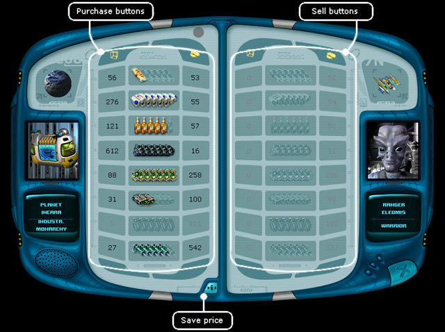
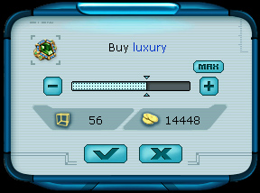

Ranger manual > Planet
screen > Trading center (T)
|
Ranger manual > Planet
screen > Trading center (T)
|
| Trading Center(T) There are eight groups of goods in the game: food, medicaments, equipment, luxuries, minerals, alcohol, weapons and drugs. All of these you can buy or sell in the trading center. In the left part of the window you can see the amount of goods of each type available on this planet and the price for it. On the right there is the amount of goods on the ship and the price you can sell this item at. |

 For player's convenience in the central part of the window right next to the icons
with the goods you will also see icons with thumbs-up or thumbs-down icons indicating
whether it is profitable to purchase this type of goods on this planet. This feature
will help those players who is reluctant to remember the exact prices in search for
a more lucrative bargain, but wish to make the buy-and-sell process
both easy and pleasant. :-)
For player's convenience in the central part of the window right next to the icons
with the goods you will also see icons with thumbs-up or thumbs-down icons indicating
whether it is profitable to purchase this type of goods on this planet. This feature
will help those players who is reluctant to remember the exact prices in search for
a more lucrative bargain, but wish to make the buy-and-sell process
both easy and pleasant. :-) |
| To buy certain goods: 1. Left-click the panel with the image of the required goods in the left part of the window. A pop-up window 'Purchase' will appear in the middle of the screen.  2. Set the amount of the goods you are going to buy (use the slider or the button 'Maximum'). 3. Press the button OK. Note. You can't purchase the goods for the price exceeding your money, or in the volume exceeding the free space on your spaceship. |
| To sell certain goods: 1. Left-click the panel with the goods, you wish to sell in the right part of the window. A dialogue window 'Sell' will appear. 2. Set the amount of the goods to sell (with the help of the slider or the 'Maximum' button). 3. Press OK. Note. When planning to sell certain goods, check the price you bought these goods for. To do it move the mouse cursor to the item you need in the right part of the window and a text hint will appear on the "Navigation panel". Price of Goods The price of the goods on each planet is determined by a large number of factors. It depends not only on the native race or the economical system of a planet, but also on the intensity of the haulage. The prices are created dynamically. Today the planet may be in need of some goods, and the prices for them may be very high there. But already a month later the prices may drop because of the flow of merchants offering this type of goods. Therefore you should carefully listen to the advice of those merchants you encounter and read the economic news in the Information Center. Then you will be able to live high off the hog making good deals. Hint. To save the prices for these goods on this planet click the icon Note! There is a more convenient way to check the prices on the planets. You can find out the prices in the trading center without landing on the planet. To do that simply right-click on the planet, an icon with the price will appear on the navigation panel. This way of price obtaining is possible only in the operation area of the radar. To receive the prices from all the planets and stations in the radar operation area press Insert key. Illegal Goods  Quite often
the most commercially beneficial deals would involve illegal goods. It is up to the ranger,
to violate or not to violate the law and live honestly. In this way it is possible to buy drugs from
pelengs and sell them to gaals with profit. It will bring you enormous money. But the government
of the gaalian planet will not be happy with the ranger's actions, and will change its attitude from
good to bad. Hence the smuggler will have to spend much efforts and money
to revert the good attitude back, another option will be then to keep back from the
gaalian planets... Quite often
the most commercially beneficial deals would involve illegal goods. It is up to the ranger,
to violate or not to violate the law and live honestly. In this way it is possible to buy drugs from
pelengs and sell them to gaals with profit. It will bring you enormous money. But the government
of the gaalian planet will not be happy with the ranger's actions, and will change its attitude from
good to bad. Hence the smuggler will have to spend much efforts and money
to revert the good attitude back, another option will be then to keep back from the
gaalian planets... When concluding an illegal bargain, a notice message appears, thus no need to worry, you won't be able to occasionally violate the law. The legality of goods on the planet depends on two factors: the race inhabiting the planet and the political system. |